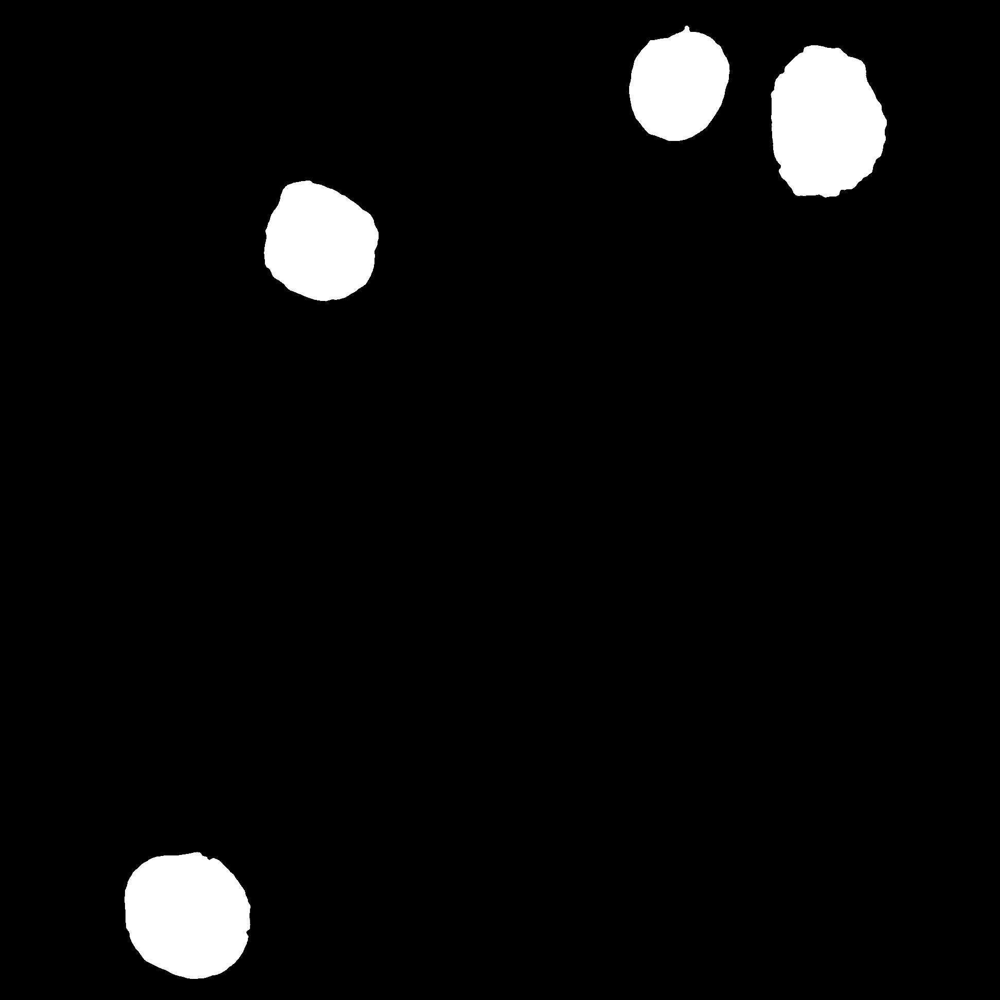
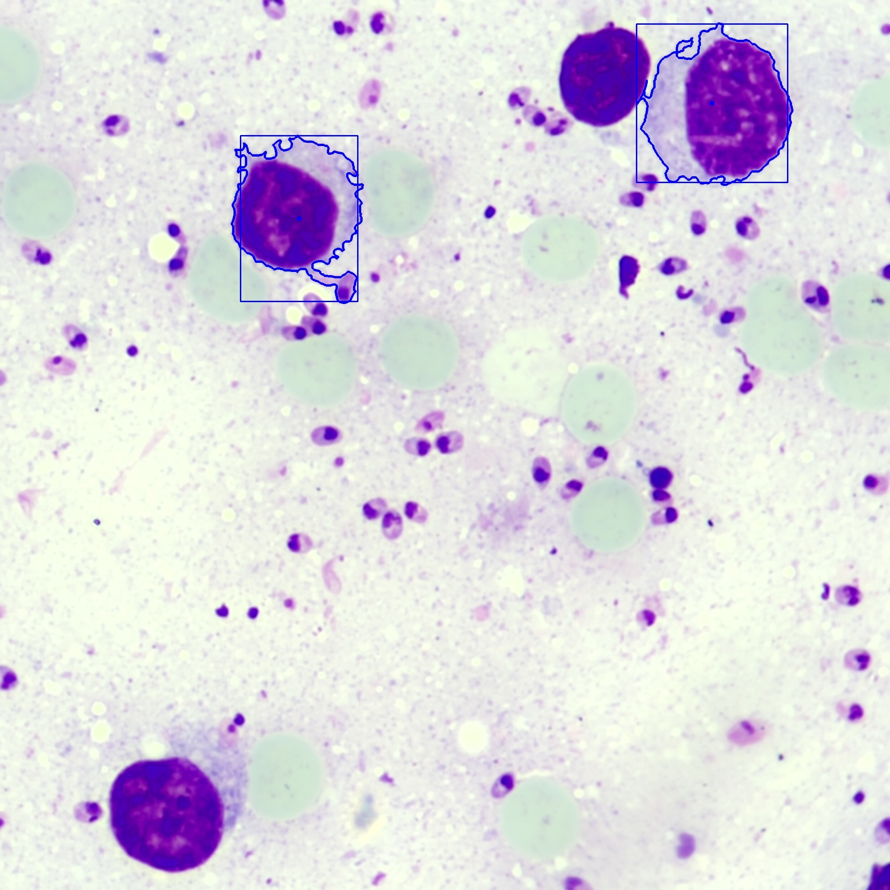
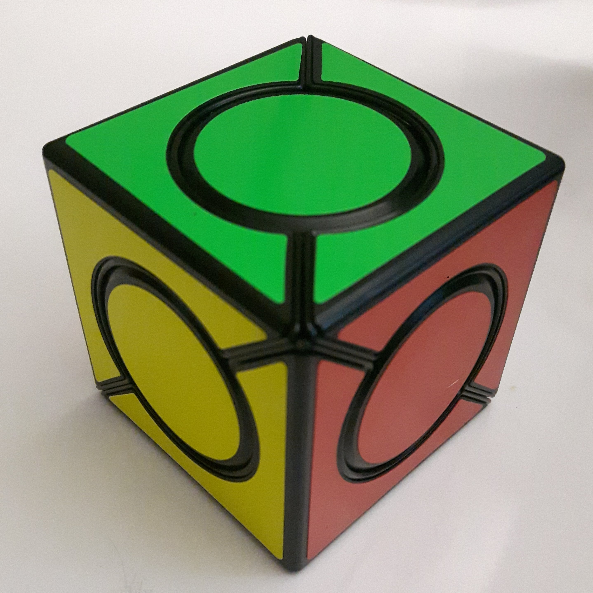

🔬 Modelos de Detección
Un modelo de detección es un programa capaz de detectar una serie de elementos diagnósticos específicos a una enfermedad dada una imagen de entrada.
Elementos Diagnósticos
El modelo de detección debe de computar una lista de todos los elementos diagnósticos y los componentes de la caja más pequeña que lo contiene (bounding box), estos componentes son:
- x: Coordenada horizontal (imagen de la muestra como marco de referencia) de la esquina superior de la caja, unidad en pixeles, dirección, oeste-este
- y: Coordenada vertical (imagen de la muestra como marco de referencia) de la esquina superior de la caja, unidad en pixeles, dirección norte-sur
- w: Ancho de la caja
- h: Alto de la caja
Una imagen explicativa de las componentes en referencia a la muestra se muestra a continuación:
{kind=link}
Algunos modelos no pueden computar una bounding box para los elementos y en su lugar utilizan centros de masa, en este caso las componentes w y h deben contener el valor '0', esto será interpretado por la aplicación de Leishmaniapp como un centro de masa en lugar de una bounding box
Formato de los Resultados
Los modelos de detección deben de representar los resultados a través de un mapa llave-valor en la que la llave es el nombre del elemento diagnóstico y el valor es una lista de componentes (coordinates) de cada uno de los elementos encontrados.
Ejemplo: suponga que una enfermedad mock tiene 3 elementos diagnósticos: 'foo', 'bar' y 'baz', a continuación un ejemplo de los posibles resultados del modelo mock
{
"foo": [],
"bar": [
{ "x": 10, "y": 10, "w": 2, "h": 3 },
{ "x": 40, "y": 20, "w": 5, "h": 5 }
],
"baz": [
{ "x": 25, "y": 20, "w": 0, "h": 0 }
]
}
Esto implica que:
- No hay ningún elemento del tipo foo en la muestra
- Hay 2 elementos del tipo bar en la muestra, uno en las coordenadas (10, 10) y otro en (40, 20), cada uno con su respectiva caja contenedora
- Hay 1 elemento del tipo baz en la muestra, su centro de masa se encuentra en la coordenada (25, 20)
ALEF (Adapter Layer Exec Format)
Para que los modelos de análisis puedan ser integrados a LeishmaniappCloudServiceV2 (Veáse documentación de cloud) es necesario implementar un estándar de entradas y salidas que permitan al model_wrapper llamar a los modelos de análisis, este estándar tiene el nombre de ALEF dentro de la infrastructura de Leishmaniapp, el nombre viene dado por el mecanismo que utiliza model_wrapper para hacer el llamado a los modelos (syscall exec).
Entradas
-
--alef-in: Argumento que especifica la ruta relativa o absoluta hacia el archivo de imagen que va a ser utilizado como entrada para el modelo, este argumento es obligatorio.
-
--alef-out: Argumento que especifica la ruta relativa o absoluta hacia el archivo de imagen que será creado y escrito por el modelo, este archivo puede ser otra imagen que pueda ser requerida como input en otros modelos y es un argumento opcional. Todos los modelos deben de permitir este parámetro pero no necesariamente deben de hacer uso de él, puede ser ignorado.
Se recomienda que cualquier otro parámetro adicional sea opcional, de no ser así por favor asegúrese que los parámetros están correctamente establecidos en el archivo de configuración de model_wrapper
Salidas
Los resultados del modelo deben de ser escritos a la salida estándar (stdout) y el código terminación del programa debe de ser 0, si desea mostrar información de depuración o cualquier otro mensaje relevante para el usuario, debe de hacerlo a través del error estándar (stderr) pues este será ignorado por model_wrapper cuando la petición es exitosa.
Los resultados escritos en la salida estándar deben de estar en formato JSON y seguir un esquema como el del siguiente ejemplo:
{
"a": [
{ "x": 25, "y": 100, "w": 10, "h": 10 },
{ "x": 65, "y": 150, "w": 20, "h": 20 },
{ "x": 100, "y": 50, "w": 30, "h": 30 }
],
"b": [
{ "x": 50, "y": 25, "w": 10, "h": 20 },
{ "x": 68, "y": 185, "w": 10, "h": 20 }
]
}
Estos resultados son traducidos por model_wrapper en los resultados de la estructura (leishmaniapp.cloud.model.Sample.results), ejemplo de los resultados traducidos en formato JSON:
{
"a": {
"coordinates": [
{ "x": 25, "y": 100, "w": 10, "h": 10 },
{ "x": 65, "y": 150, "w": 20, "h": 20 },
{ "x": 100, "y": 50, "w": 30, "h": 30 }
]
},
".b": {
"coordinates": [
{ "x": 50, "y": 25, "w": 10, "h": 20 },
{ "x": 68, "y": 185, "w": 10, "h": 20 }
]
}
}
Si el modelo falla, debe de retornar con un código de terminación diferente de 0, de esta manera model_wrapper puede determinar la falla y se utilizará el texto del error estándar como mensaje de error
Ejemplo
A continuación un ejemplo del modelo para la enfermedad de pruebas mock.spots utilizando ALEF, utilice este código como base para la implementación de ALEF en sus propios modelos escritos en Python
#!/usr/bin/python
import argparse
import json
import logging
from sys import stderr
from model import DEFAULT_TOLERANCE, analyze
def main():
# Create the logger
handler = logging.StreamHandler(stream=stderr)
logger = logging.getLogger()
# Set the formatter
formatter = logging.Formatter("%(asctime)s [%(levelname)s]: %(message)s")
handler.setFormatter(formatter)
# Set the handler
logger.addHandler(handler)
logger.setLevel(logging.DEBUG)
# Declare the arguments
parser = argparse.ArgumentParser()
parser.add_argument(
'--alef-in',
'-i',
dest="input",
type=str,
help="ALEF input filename",
required=True,
)
parser.add_argument(
'--alef-out',
'-o',
dest="output",
type=str,
help="ALEF output (generated mask)",
required=False,
)
parser.add_argument(
'--tolerance',
'-t',
dest="tolerance",
type=int,
help="Range of accepted hue values for a color",
required=False,
default=DEFAULT_TOLERANCE,
)
# Parse the arguments
args = parser.parse_args()
# Get the tolerance
filepath = args.input
output = args.output
tolerance = args.tolerance
# Run the model
results = analyze(
filepath,
output,
tolerance
)
# Show the output
print(json.dumps(results))
if __name__ == '__main__':
main()
Modelos de Diagnóstico Soportados
A continuación una documentación de cada uno de los modelos de diagnóstico presentes en el respositorio de la organización de Leishmaniapp
Leishmaniasis con tinción Giemsa
El identificador para esta enfermedad es leishmaniasis.giemsa, y se compone de dos elementos diagnósticos independientes: El modelo de detección de parásitos (Leishmania spp.) identificado como leishmaniasis.giemsa.parasites, y el modelo de detección de macrófagos identificado como leishmaniasis.giemsa.macrophages.
| Modelo | Propósito | Repositorio | Elementos Diagnósticos |
|---|---|---|---|
| leishmaniasis.giemsa.parasites | Identificación del parásito Leishmaniap spp. en muestras de Leishmaniasis con tinción giemsa | github.com/leishmaniapp/leishmaniasis-giemsa-parasites-model | parasite |
| leishmaniasis.giemsa.macrophages | Identificación de macrófagos en muestras de Leishmaniasis con tinción giemsa | github.com/leishmaniapp/leishmaniasis-giemsa-macrophages-model | macrophage |
| leishmaniasis.giemsa | Modelo conjunto (parásitos y macrófagos) con soporte para model_wrapper | github.com/leishmaniapp/leishmaniasis-giemsa-disease | parasite, macrophage |
| com.leishmaniapp.lam.leishmaniasis.giemsa | Implementación LAM para Android de leishmaniasis.giemsa (parásitos y macrófagos) | github.com/leishmaniapp/leishmaniasis-giemsa-lam-android | parasite, macrophage |
Identificación de Parásitos
Este modelo hace uso de un clasificador entrenado (archivo pickle) para realizar la detección de parásitos
A continuación un ejemplo de una muestra que no ha sido analizada y los parásitos identificados luego de ser procesada por el modelo (las bounding box han sido exageradas para mejorar la visualización, tomarán un tamaño menor en un análisis real)
| Muestra sin analizar | Muestra analizada |
|---|---|
 |
 |
Identificación de Macrófagos
A continuación un ejemplo de una muestra que no ha sido analizada en contraste con la máscara generada por el modelo de detección de macrófagos y los resultados obtenidos resaltados.
| Muestra sin analizar | Máscara generada | Elementos resaltados |
|---|---|---|
 |
 |  |
{kind=link}
{kind=link}
Este modelo no contiene a los macrófagos en una bounding box, en su lugar, retorna su centro de masa
Malaria con tinción Romanowsky
El identificador de esta enfermedad es malaria.romanowsky y es capaz de identificar leucocitos (leukocyte) y parásitos en 3 estadíos (trophozoite, schizont y gametocyte)
| Modelo | Propósito | Repositorio | Elementos Diagnósticos |
|---|---|---|---|
| malaria.romanowksy | Identificación de leucocitos y parásitos (Plasmodium spp.) en sus estadíos para muestras de Malaria con tinción de Romanowsky | github.com/leishmaniapp/malaria-romanowsky-model | leukocyte,trophozoite, schizont, gametocyte |
| com.leishmaniapp.lam.malaria.romanowsky | Implementación LAM para Android de malaria.romanowsky | github.com/leishmaniapp/malaria-romanowsky-lam-android | leukocyte,trophozoite, schizont, gametocyte |
A continuación un ejemplo de una muestra de malaria sin analizar y los resultados de una muestra analizada
| Muestra sin analizar | Resultados resaltados |
|---|---|
 |
 |
Los resultados mostrados anteriormente pueden ser generados con el parámetro --alef-out
Funcionamiento
El modelo divide la identificación en 6 etapas:
- Generación de máscara de leucocitos
- Identificación de leucocitos
- Generación de máscara de parásitos a partir de la máscara de leucocitos
- Generación de recortes individuales de parásitos
- Clasificación de parásitos
- Clasificación de estadío de los parásitos
Las etapas del 1 al 4 se realizan exclusivamente mediante el uso de la librería opencv, la etapa de clasificación (5 y 6) utilizan clasificadores entrenados de TensorFlow Lite los cuales pueden ser encontrados en el directorio src/models, estos clasificadores se utilizan sobre cada uno de los recortes de parásitos individuales obtenidos en el paso anterior para determinar si son, o no, un parásito y el estadío en el que se encuentran
Análisis Externo
Las etapas de clasificación (5 y 6) hacen uso de la librería TensorFlow Lite, sin embargo, algunas plataformas pueden beneficiarse de librerías nativas que puedan hacer uso de algunos recursos de hardware (como gpu's) a los que Python no tiene acceso. (Caso concreto, modelo LAM hace uso de la librería nativa de TFLite).
Por esto, las etapas de clasificación (5 y 6) pueden ser interrumpidas, y en su lugar; obtener los recortes individuales de parásitos que son el punto de partida para un análisis externo al modelo implementado en Python.
Para activar esta característica utilice el parámetro --external-parasite-analysis=[dir] o -e [dir], donde [dir] es la ruta absoluta o relativa a un directorio en donde los recortes individuales de los parásitos serán almacenados, el output del modelo será modificado y ahora en lugar de obtener únicamente los elementos diagnósticos y sus componentes, se mostrará una tupla (2-d) con los siguientes valores
- Mapa llave-valor de resultados ALEF
- Mapa llave-valor en el que la llave es el nombre del archivo correspondiente a ese recorte de parásito, y como valor sus componentes
⚠️ Esta funcionalidad rompe con el esquema ALEF, por lo que esta opción no es compatible con model_wrapper
Modelos de Prueba
Las anteriores enfermedades pueden dificultar el proceso de depuración de la arquitectura, es por eso que existen otra clase de "enfermedades" que son utilizadas únicamente con fines de prueba, los modelos de detección correspondientes a estar enfermedades procesan imagenes de objetos cotidianos que permitan depurar facilmente problemas en la aplicación o arquitectura sin contar con una muestra de laboratorio.
Detector de Colores
El identificador para esta enfermedad/modelo de prueba es mock.spots, detecta los principales canales de color en una imagen y calcula los centros de masa del parche de color más grande en la muestra.
| Modelo | Propósito | Repositorio | Elementos Diagnósticos |
|---|---|---|---|
| mock.spots | Identificación de parches de color | github.com/leishmaniapp/mock-spots-model | red, green, blue, yellow, cyan, magenta |
| com.leishmaniapp.lam.mock.spots | Implementación LAM para Android de mock.spots | github.com/leishmaniapp/mock-spots-lam-android | red, green, blue, yellow, cyan, magenta |
A continuación un ejemplo de una muestra de un cubo de rubik con los colores rojo, amarillo y verde; en contraste con la máscara generada por el modelo y un pequeño punto blanco marcando el centro de masa de cada parche de color
| Muestra sin analizar | Máscara generada |
|---|---|
|  |
{kind=link}
{kind=link}
Los resultados de este modelo no se encuentran enmarcados por un bounding box, en su lugar, se calcula el centro de masa de cada uno de los parches de color.
Para ajustar la sensibilidad del modelo utilice el parámetro de entrada --tolerance o -t, el valor por defecto de la tolerancia es 10. Si quiere visualizar la máscara resultante puede hacer uso del parámetro --alef-out o -o